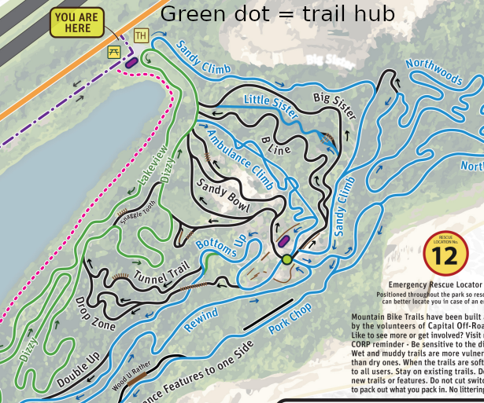

WHHDS: Wingra, Heron, Hops and Derailleur Society
An early morning cycling
tradition in Madison, Wisconsin
- Find us on Zwift, Groups.IO and on Facebook
- Discord channel for our rides on Zwift
- Facebook
- WHHDS at Groups.IO
- Subscribe via the web at Groups.IO
- Subscribe via email:
- send to: WHHDS+subscribe@groups.io
- subject: subscribe
- body: empty
NEWS 2025
The 2025-26 Indoor Riding Season is On!!!
Ride with us indoors on Monday, Wednesday and Friday at 6 AM
on Zwift.
Subscribe to the list at groups.io for sign-up links for the
rides each week.
See Indoor Rides for
how our rides work with Zwift and Discord.
|
Heroners
The Wingra Heron Hops and Derailleur Society is a gentle-persons'
club of cyclists. We proudly sponsor regular weekday rides starting
early and returning by 7 AM or 7:30 AM. At 5:30 AM on Tuesday,
Thursday and Friday we ride from the buffalo, WEOTA and buffalo again
respectively (see meeting points below). On Monday we depart from
EEOTA at 6 AM. All rides leave promptly at the posted time. On
Wednesdays, rides for mountain bikers might get posted from time to
time.
We will aim to have four regular weekday rides outdoors and 3
indoors during the winter (subject to sufficient interest).
Traditionally, outdoor rides begin when the routes are ice-free (or
ice can be detoured around) and morning temperatures are tolerable
-- about or ideally above freezing for the hardiest Heroners -- and
continue as long as fall weather permits. Rides can be entirely
before sunrise late in the season, so having a good headlight and
taillight is important.
Rides are often posted to the list individually until a regular
pattern of riders develop. Once rides have been established, they
can be assumed to be on if conditions are appropriate. Anyone may
post ride opportunities to the list, but we ask that members not
post rides to the list that conflict with the regular morning
schedule.
- Mondays: One-Hour Joy Ride, 6 AM @ EEOTA. Get the week
off to a good start with a not-too-hilly, not-too-hard ride to the
east side of Verona via the Cannonball Path, Seminole Highway, and
Grandview Rd., back via the Military Ridge State Trail. For the
time-constrained, this ride usually reaches WEOTA before 7 and EEOTA
before 7:10, though determined groups have made it back to EEOTA close
to the top of the hour.
ROUTE
- Tuesdays: Buffaloes Ride, 5:30 AM @ the Buffaloes. After a
quick warmup on the Southwest Path and Hammersley Road, the ride
passes through Elver Park to rolling hills on Mid Town Road. After a
loop passing by the Riley Tavern via Timber Lane, Paulson Road, County
Hwy J, and Maurer Road, we ride the Mid Town hills in reverse back
into town. ROUTE
- Wednesdays: Dirty Wednesday Mountain
Biking, starts at various times and locations. Watch the email
for announcements.
- Thursdays: Extended Paoli. 5:30 AM @ WEOTA. This ride is a
version of the classic Paoli loop. "Extended" means we ride the length
of Sun Valley Parkway west to east from Paoli. The non-extended loop
returns to the Badger State Trail via Sayles Trail for a few minutes'
time savings in the event of unforeseen delays early in the ride or
other
exigencies. ROUTE
- Fridays: Pathology/Friday Small Ring Ride, 5:30 AM @ the
Buffaloes. Spin a low-stress mostly-path route for a social
ride/leg-opener for the weekend's activities. If you are new to the
group and are not sure if you're ready to hang with the Tuesday or
Thursday rides, or want to work on your group riding skills, this ride
features a more moderate pace. Stronger riders are encouraged to keep
their drive trains on the small ring and pull the group along.
ROUTE
- Saturdays: The Saturday ride varies from week to week.
Subscribe to the email list to be notified of when the ride departs,
from where and what route it takes.
Our outdoor road rides average between 16 and 20 MPH. The best way
to start with the group is on a Monday or a Friday ride. These
rides are flat and easier than the Tuesday and Thursday rides.
Tuesday is our hilly ride and typically features vigorous moments.
Try the Thursday ride before the Tuesday ride if you have any
doubts. Our group consists of good non-racers, retired racers and a
few bike racers. Some of us learned the ropes and developed the
skills to ride in a group by doing these rides. We enjoy the
opportunity to pay back the favor by bringing interested riders into
the fold. See links to starting point locations.
Dirty Wednesday (usually runs May to mid-August)
Look for notices Sunday-Tuesday during the summer for morning
mountain bike rides. We sometimes focus on skills but one is always
welcome to come, ride and do their own thing. Depending on the
ride, we'll meet at the Buffalo or the east entrance to Quarry Park
(near Whole Foods). The meeting time can also vary depending on the
timing of Sunrise and other factors. All abilities are welcome with
the understanding that everyone rides only the sections and
features they themselves deem appropriate for their ability.
This ride is weather dependent so check riding conditions
at madcitydirt.com
before heading out. See links to the starting
point locations below.
Wednesday
WNBR: Rides depart from various points in and around Dane
County every Wednesday. Ride schedule can be found
here: wnbr.org
Thursday
SlownGo: Slow n Go rides are a relaxed pace group ride intended to
make it easy for everyone to participate without getting dropped
and allow stronger riders to get in some easy miles before the
weekend. The aim is to hold a steady comfortable effort, ie soft
pedal up the hills. Subscribe to the email list to get time and
meeting location.
Saturday
Saturday rides are generally posted to the group email list.
Indoor rides usually run from November to March
- All are welcome to join our Zwift indoor rides on Monday,
Wednesday and
Friday. Join the Heroners on Zwift and use the link sent
to the email list to get signed up. We sometimes hunt badges, do
a workout or play at sprinting for banners. Some rides may be
shorter or longer than the hour, check the event link sent to the list
for each ride for details. In any case, we ride as one and regroup
after sprints.
- Monday 6:00 to 7:00 AM Central USA
- Wednesday 6:00 to 7:00 AM Central USA (Veselka ride)
- Friday 6:00 to 7:00 AM Central USA
- How to get started on Zwift
- All about Discord (invite code: Ca4K6yV)
Video
Here is a video of our ride. This video is taken from two
different rides and is a fair representation.
The
Heroners and the morning ride.
- The
Buffalo Where the southwest commuter path crosses Midvale near
Yuma.
- WEOTA McCaffrey Drive and Seminole Highway (west
end of the arboretum).
- EEOTA Meet on the bridge which crosses
Wingra Creek near Mills Street on Arboretum Drive. Also known
as the East End Of The Arboretum (EEOTA).
- Quarry Park Trail Head.
- Quarry
Ridge (trail hub at the top of the hill).

History
Below is a link to the original WHHDS website created by Damon
Bourne and hosted by the Bicycle Community Page (unedited).
- WHHDS History
|